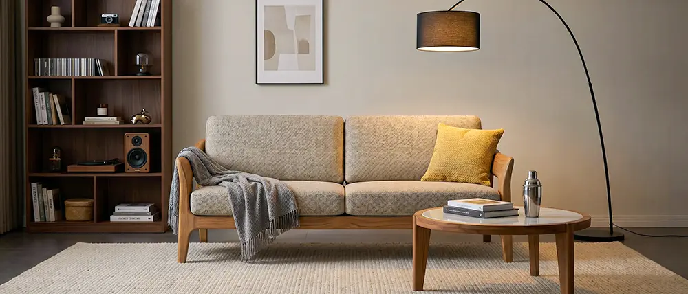
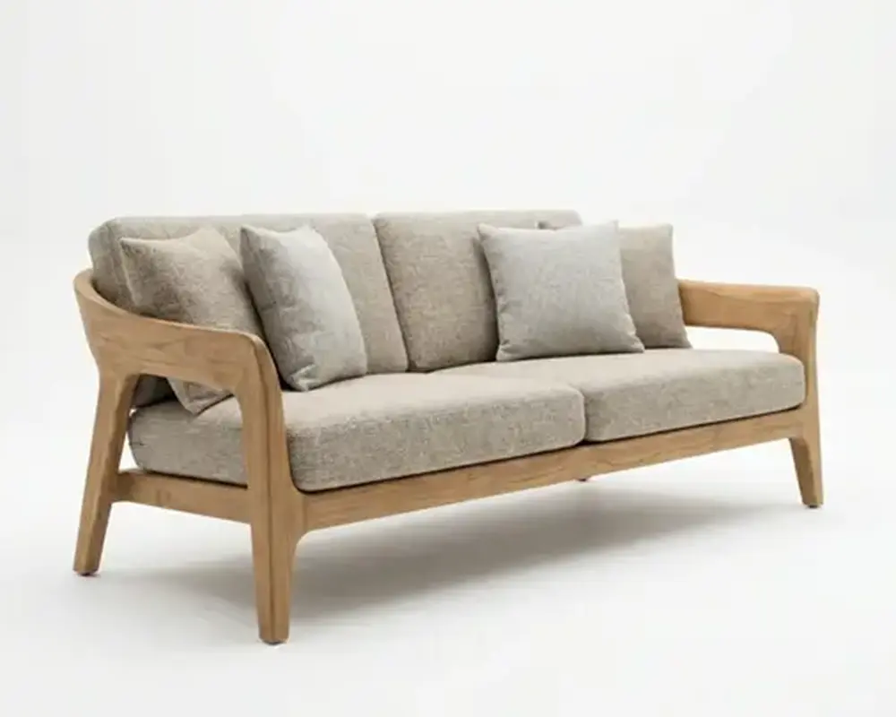

לסדר את התמונות שכבר יש לכם
לאחד מיקום, מרווחים ורקע בקבוצת תמונות, כדי שהמוצרים יוצגו יחד בצורה עקבית.
לבעלי חנויות אונליין, מנהלי איקומרס ושיווק
מהתמונות שכבר יש לכם. בכמה צעדים פשוטים.
כאן תראו איך מאחדים מסגור ורקע, משלימים תמונות וסרטונים
ושומרים את ההגדרות גם למוצרים הבאים.


מוכנים להתחיל? פתחו חשבון באפוקס
בין המשתמשים באפוקס בישראל
מה תדעו לעשות אחרי ההדגמה
לאחד מיקום, מרווחים ורקע בקבוצת תמונות, כדי שהמוצרים יוצגו יחד בצורה עקבית.
להכין תמונה על רקע נקי, תמונת אווירה וסרטון קצר — לפי מה שהאתר והשיווק שלכם צריכים.
לשמור הגדרות, להפעיל אותן על מוצרים נוספים, לבדוק את התוצרים ולהעביר אותם לשימוש באתר.
מתחילים במוצר שלכם
לא חייבים להחליף כל תמונה באתר.
מתחילים בתוצרים שחסרים למוצרים שלכם.
דוגמאות שפורסמו באתר אפוקס. בכל הפקה בודקים את הצורה, הצבע והפרטים מול תמונת המקור.
כשהמוצרים הבאים מגיעים
במקום להגדיר הכול מחדש לכל מוצר, שומרים את הכיוון שעבד וממשיכים איתו.
להתחלת עבודה באפוקסמעלים קבצים, משתמשים בקישור מוצר או מייבאים מחנות מחוברת.
רקע, סביבה, תאורה ומסגור — בהתאם למוצר ולמקום שבו יוצג.
כל מוצר עם תמונת המקור שלו, והגדרות משותפות להמשך העבודה.
מורידים את הקבצים או מפרסמים לחנות נתמכת, לאחר בדיקה ואישור.
למי ההדגמה מתאימה
כשכל מוצר חדש דורש עוד תמונה, עוד עריכה ועוד תיאום עם איש מקצוע.
כשצריך להעלות קולקציה, אבל תמונות הספק לא אחידות ובעמודי המוצרים חסרים תוצרים.
כשצריך לחדש תמונות וסרטונים למודעות, במקום להשתמש שוב באותם חומרים.
ריהוט ומיטות · ארונות אמבטיה ומטבחים · שטיחים ותאורה · אופנה ונעליים · תכשיטים
מתחילים בהן. אפשר לאחד מסגור ורקע בתמונות שדורשות טיפול, להשלים תמונות אווירה שחסרות או ליצור סרטון מתמונה. אין צורך להחליף את כל התמונות באתר.
תמונה ברורה שבה המוצר מופיע בשלמותו והפרטים שלו נראים היטב. כדאי להתחיל במוצר אחד ולבדוק את התוצאה לפני שמרחיבים את העבודה לקבוצה.
המסגור קובע את המיקום ואת המקום שהמוצר תופס בתוך התמונה. הוא אינו משנה את המידות הפיזיות ואינו מחליף את פירוט המידות בעמוד המוצר. שומרים על היחסים של כל פריט ובודקים את התוצאה.
משווים את התוצר לתמונת המקור לפני שימוש: מבנה, גוון, חומר ופרטים כמו תפרים, ידיות, שיבוץ או טקסט. תוצאה שלא מייצגת את המוצר דורשת תיקון או ניסיון נוסף. הבדיקה היא חלק מתהליך העבודה.
לא. אפשר להעלות תמונות ולהוריד את התוצרים כקבצים. חיבור לשופיפיי או לווקומרס מוסיף ייבוא מוצרים והעברת תוצרים לחנות הנתמכת. בעבודה הרגילה אתם בוחרים מה לפרסם ומאשרים את הפרסום.
אפשר לרכוש תוספת מתוך החשבון בלי להחליף חבילה. הקרדיטים החודשיים והמגבלה היומית הם שני דברים שחשוב לקחת בחשבון אם מתכננים להפיק קולקציה בזמן קצר.
ההגדרות ששמרתם יכולות לשמש גם לדגמים, צבעים וקולקציות נוספות. התוצרים נשארים משויכים למוצר, ואפשר לחזור אליהם ולהמשיך להכין תמונות וסרטונים לאתר ולשיווק.
חשבו כמה מוצרים צריך להכין, כמה תוצרים לכל מוצר והאם צריך גם וידאו. בדקו גם את המכסה היומית ואת מספר הסרטונים שאפשר ליצור במקביל. בסיום ההדגמה מוסבר ההבדל בין החבילות. אפשר לבטל את המנוי בכל עת.
אפשר להתחיל מקבוצה אחת של מוצרים